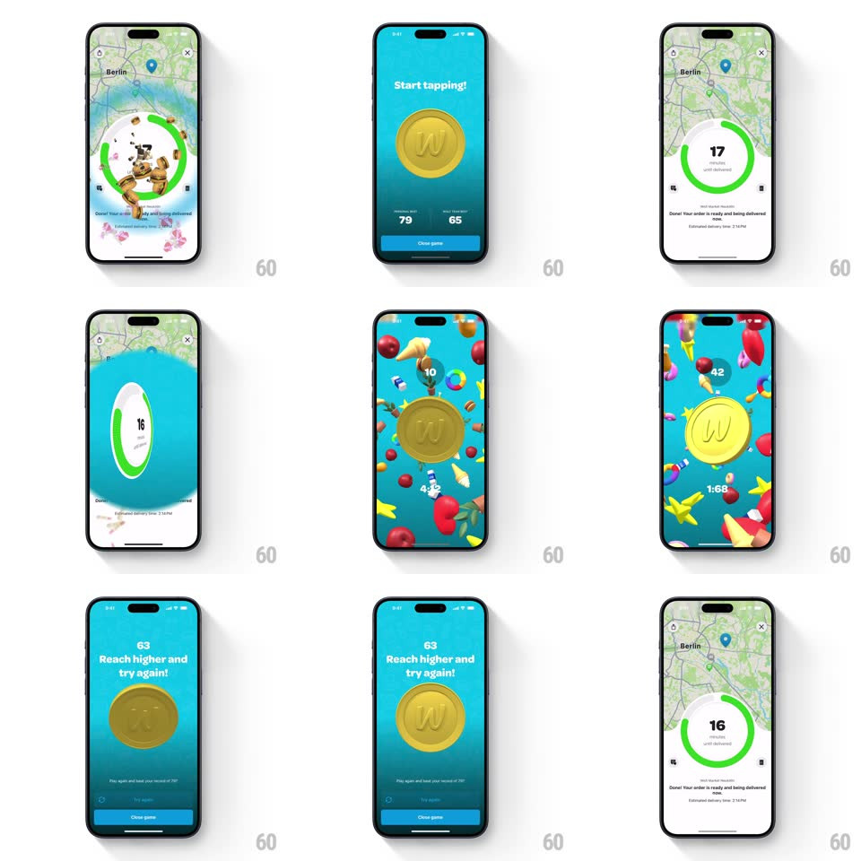

Media
Frame-by-frame

Rebuild this interaction 1:1: Wolt's hidden coin game - tapping the circular delivery timer reveals a full-screen game where a giant gold "W" coin flips in 3D with every tap while stars, hearts, and treats rain around it.

Rebuild this interaction 1:1: Wolt's hidden coin game - tapping the circular delivery timer reveals a full-screen game where a giant gold "W" coin flips in 3D with every tap while stars, hearts, and treats rain around it. ## Integration Integration: stack-agnostic spec - springs given as stiffness/damping, timed motions as duration + curve; map every value to your framework and animation library of choice. ## Scene A Wolt delivery screen (map of Berlin, a circular green progress timer counting "17 minutes until delivered") gives way to a blue gradient game screen: a huge gold W coin center, "Start tapping!", personal-best and session scores, a countdown timer, and a Close game button. Ending state: "Reach higher and try again!" with the final score. ## Motion spec Pattern: 3D coin flip per tap inside a confetti rain, gesture-driven. - Reveal: tapping the timer ring bursts floating treat icons out of the ring (scale 0 -> 1 with scatter, 300ms) and the game screen pushes up (spring ~320/24, 400ms). - Coin flip: each tap spins the coin on its vertical axis (rotateY += 360deg, 500ms, ease-out) with a slight hop (translateY -12px -> 0, spring ~400/20); the embossed W face and rim shading stay lit correctly through the flip. - Rain: stars, hearts, donuts, and mini-coins drift down continuously (varying fall speeds 1.5-3s across the screen, gentle sway, random rotation). - Score: the counter increments with a number pop (scale 1.3 -> 1, 150ms) per tap; the session timer counts down. - End: the coin settles and "Reach higher and try again!" fades up (250ms) with the final score popping in (spring ~300/16). ## Calibration - Flips queue cleanly: a tap mid-flip starts a new full turn, not a restart from zero. - The rain is ambient and continuous, not tied to taps. ## Reduced motion Coin scales instead of flipping; rain is static. ## Don't miss - The coin reads as 3D - shading and edge visible through the turn, not a flat rotate. - The timer ring on the delivery screen is the entry point - it reacts to the tap before the transition.